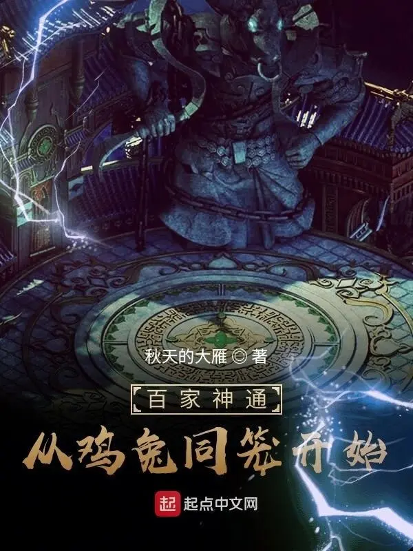
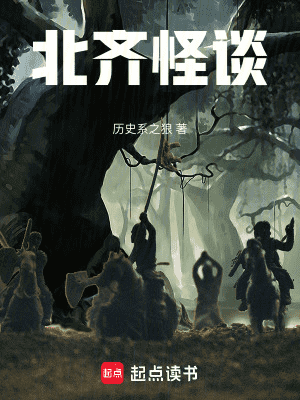
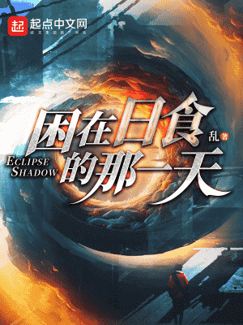
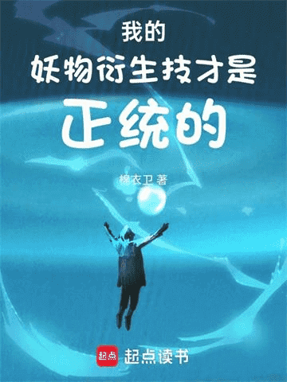
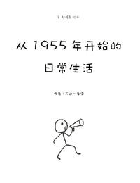
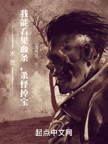
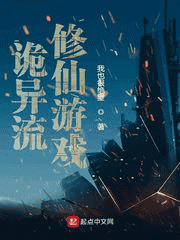
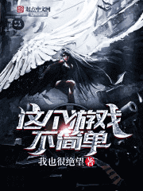
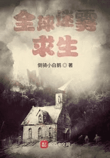
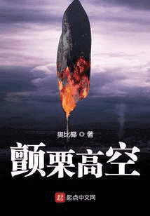

百家神通：从鸡兔同笼开始
设定和剧情都有很大问题，作者感觉有点搞不清自己在写什么，一会要搞革命一会和老婆玩情深深雨蒙蒙，隔七八章主角就得证明一下自己对老婆不离不弃，一证明就是一整张，给我看yue了。
★★☆☆☆
昼行灯 写于2025年1月20日


北齐怪谈这本书我很推荐。一开始以为是灵异那类的，还想着古代怪谈灵异有点意思，点进去看了才发现是历史文。不过写得很好，非常好，整体还是那套建功立业，天下一统的线路，但角色和剧情都很生动，作者考据也很到位，如果喜欢历史文的话很推荐。
★★★★★
昼行灯 写于2025年3月27日

困在日食那一天《困在日食那一天》主线是主角濒死，但是意外发现能够根据自己的濒死时间回到十年前来改变过去，以获得抢救机会。到105章都很精彩，然后就完全和标题没关系了。主角得救了，不循环了。写的东一榔头西一棒槌，作者感觉脑子里是有个完整设定的，但是他没写出来，主角改变了什么也不讲，主角掌握了什么做了什么也不讲，直接按照假设读者知道的方式写了。莫名其妙时不时蹦出来一个人说以前啥啥啥认识。
★★★☆☆
昼行灯 写于2023年11月15日

我的妖物衍生技才是正统《我的妖物衍生技才是正统》，棉衣卫的作品，老一套风格，依旧是主角利用各种无厘头规则技折腾世界的剧情，不过没有万界好笑，也算能看。不过这本书主角比前几本感觉要没节操的多，后面发现主角居然有底线的时候我还挺震惊的。缺点的话，就和作者自己说的一样，完全不会写配角，整本书就主角在死命折腾，其他人一个都没记住。话说我才发现他叫棉衣卫不叫锦衣卫。
★★★☆☆
昼行灯 写于2025年5月29日

从1955年开始的日常生活《从1955年开始的日常生活》类型：日常文评价：主角做事很有意思，懂利用规则，懂布局谋划，一步步从小时候发展，挺有意思的。就是结束的太仓促，结局没给我留下什么深刻印象。
★★★☆☆
昼行灯 写于2024年8月15日

末世：我能看见血条，杀怪掉宝《末世：我能看见血条，杀怪掉宝》。又被书名骗了，看简介说是什么照顾大嫂，打怪掉落，还以为是无脑爽文，结果点进去一看还挺正经。主角算是比较正义的人设，整个末世的设定也算完善，有头有尾，剧情中上水平，书荒可以一看。
★★★☆☆
昼行灯 写于2024年10月10日


这个游戏不简单我也很绝望的处女作，很诡异的是，这似乎是他写的最好的一部小说。后续小说反而写的跟村口械斗一样，好好一个诡异大世界写的跟忍界大战一样……反倒是处女作要剧情有剧情，要设定有设定。评论区里到现在还有许多人让作者出2来着。
★★★★☆
昼行灯 写于2025年2月20日

全球迷雾求生《全球迷雾求生》很不错，作者第一本小说，但写的很有灵性，世界观参考了渎神，非常具有史诗感。虽然节奏有点问题，但整个故事写的很好，前期人类为了文明而抗争，每个人都在死亡前将自己的遗产交给其他人，让其他人带着“自己”继续前行。后期为了夺回命运而对抗，都是很让我印象深刻的点。
★★★★☆
昼行灯 写于2024年9月9日

颤栗高空《颤栗高空》。无限流小说，前面的剧本很有意思，但从时间囚笼这个副本之后开始走下坡路了。而且越往后越垃圾，每个副本都是虎头蛇尾的，开头设定的很有意思，结尾结束的莫名其妙。而且结局是梦结局……虽然也圆上了一些东西，但还是好傻逼。
★☆☆☆☆
昼行灯 写于2024年6月6日